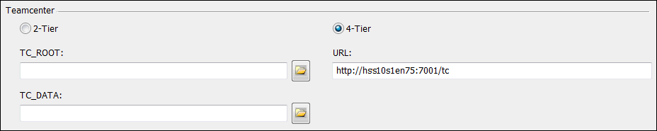

Activity: Run SEEC diagnostics
In this activity, learn how to:
-
Start the Diagnostic Application.
-
Perform a diagnostic scan.
-
Read the SEEC Diagnostics log file generated by the scan.
-
Create a collection of files necessary for assistance with troubleshooting.
-
Choose Start→Siemens Solid Edge 2023→Diagnostic Application.
Caution:You should exit Solid Edge, Structure Editor, and Add to Teamcenter prior to starting the scan.
You can use the SEEC Diagnostics dialog box to define the location of the output generated by the scan and view details produced by the scan.
-
In the SEEC Diagnostics dialog box, notice the selection of the 2-tier or 4-tier button identifying the configuration installed on your client.

The application automatically identifies your connection type. However, if you have both the 2-tier and 4-tier configurations, you can manually set the connection type for the scan.
If you are not sure which configuration your have, refer to the Solid Edge Help topic Determine your Teamcenter client configuration
-
Do one of the following:
-
For a 2-tier configuration, browse for the location of your TC_ROOT and TC_DATA information.
-
For a 4-tier configuration, supply the URL of your server if it is not already provided for you.
-
In the Diagnostic package location, specify a folder to store the files created by the scan.
Click Scan.
Sign in to Teamcenter.
Upon successful login, the scan begins. You are notified when it completes.
Click OK to dismiss the Scan Complete message box.
The Detail portion of the SEEC Diagnostics dialog box contains the results of the diagnostics scan. Additional files are created in the folder you defined in the Diagnostic package location.
View the contents of the folder you defined as your diagnostic package location.
C:\Users\<username>\Documents\SEECDiagnostic
The folder contains SEECDiagnostic_<timestamp>.txt and other files generated by running the diagnostics application.
Open the SEECDiagnostic_<timestamp>.txt log file generated by the scan.
The SEECDiagnostic_YYYYMMDDHHMMSS.txt uses YYYY for the year, MM for the month, DD for the day, HH for the hour, MM for the minute, and SS for the second to indicate when the scan started.
Locate the section of the log file that reports disk information.
The scan reports the total disk space and free space available.
Information reported in this log file should not be altered.
Review the Teamcenter Preferences portion of the report to view the preferences defined on your server.
Close the log file.
Create a zipped file of the data in the diagnostic package folder.
You are ready to send the information to product support in the event assistance is needed.
Close the SEEC Diagnostics dialog box.
Click the Close button in the upper- right corner of this activity window.
In this activity, you learned how to start the Diagnostics Application, perform a scan of your system, and read the SEECDiagnostics log file.
Now you will be able to create a package of files to send to product support in the event assistance is needed.
-
True or False: Use the Diagnostic Application when you need a collection of information regarding the configuration of your Teamcenter Integration for Solid Edge (SEEC).
-
The SEECDiagnostic log file contains all of the following information except:
a. Teamcenter attribute mapping.
b. Solid Edge version.
c. Disk information.
d. Teamcenter preferences.
-
True or False: You can use the SEEC Diagnostic dialog box to set the level of information being logged while you use Solid Edge in the Teamcenter-managed environment.
-
True — Use the Diagnostic Application when you need a collection of information regarding your Teamcenter integration for Solid Edge (SEEC).
-
The SEECDiagnostic log file contains all of the following information except:
a. Teamcenter attribute mapping.
-
True — You can use the SEEC Diagnostic dialog box to set the level of information being logged to Performance or Debug.